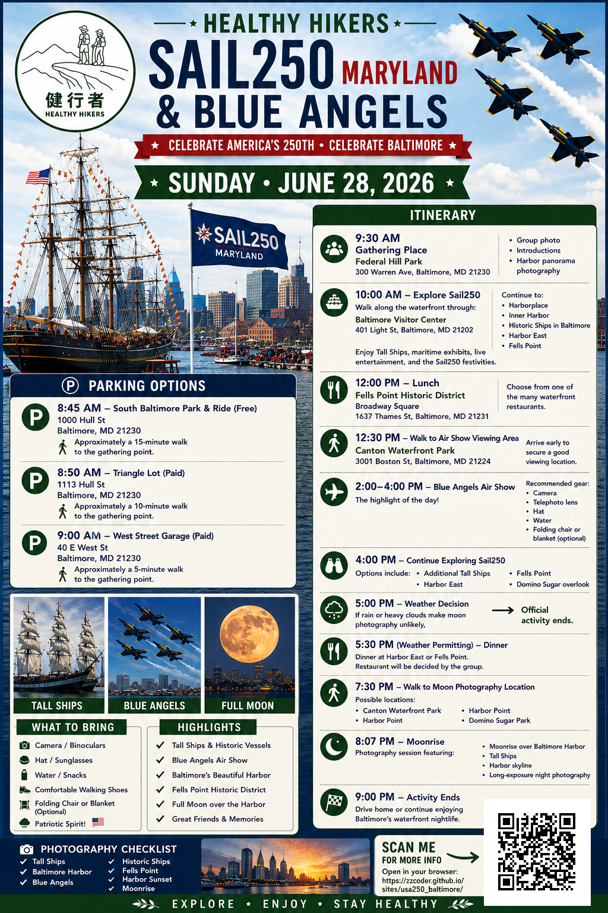
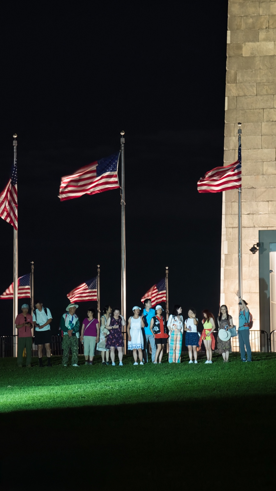

International Tall Ships
Harbor views, dockside details, rigging, flags, and skyline compositions from Federal Hill and Inner Harbor.
Sail250 Maryland
Tall Ships • Blue Angels • Fort McHenry

A full day around the harbor: tall ships, aviation, waterfront history, and sunset photography.
Harbor views, dockside details, rigging, flags, and skyline compositions from Federal Hill and Inner Harbor.
Protect the viewing window. Return early, settle in, and keep the afternoon focused on the main performance.
End the day at the Star-Spangled Banner site with USA 250 history and late-day harbor light.
Historic waterfront streets, lunch options, brick textures, boats, and candid travel-photo opportunities.
Return to Federal Hill for tall ships, city lights, and a final wide panorama over the water.
Celebrate 250 years of American independence with maritime history, aviation, and public spaces.
Parking, meeting point, harbor stops, and the recommended day route.
Published windows: Friday practice 1:00–4:00 PM; Saturday and Sunday main airshow 12:00–4:00 PM.
Sail250 says the exact performer list and set times are announced as available. Use the official airshow page and live narration on event day for final minute-by-minute timing.
Live Airshow Narration AudioMain headline demonstration team. Expected around 3:00 PM during the 12:00–4:00 PM airshow window.
British aerobatic team joining the international Sail250 airshow lineup.
French Air and Space Force demonstration team in the international lineup.
U.S. Air Force tactical fighter demonstration, listed on Sail250’s airshow performer page.
Plan the day around the 1:30 PM return to Federal Hill.
Tall Ships panorama, harbor and skyline views.
Explore tall ships and dockside experience.
Great food and waterfront charm.
Airshow positioning. Secure viewing spots before the main window.
Main show period. Do not miss this.
Photography walk after the airshow.
USA 250 history and Star-Spangled Banner site.
Baltimore Harbor sunset, tall ships, and city lights.
West Street Garage
40 E West St, Baltimore, MD
约10分钟步行到 Federal Hill. Arrive early because Sail250 traffic and street closures can change access around the harbor.

Use these pages for the latest event notices, performer updates, closures, and transportation changes.